Roaming Overview
Although WLAN uses wireless media to improve user mobility, it brings new challenges, such as ensuring that user experience is guaranteed.
As high signal quality is required to guarantee user experience, the communication between STAs and APs using wireless media has become more important. The problem, however, is that the signals between STAs and APs become weaker as their transmission distance grows. To this end, vendors adopt smart roaming technology to enable STAs that move away from an AP to switch to a closer AP, ensuring sustained signal quality. In addition, scheduling helps a WLAN avoid congestion.
Technological Background
Signal quality deteriorates as STAs move away from an AP. As such, when the signal quality decreases to a specified level (also known as the roaming threshold), STAs roam to a closer AP to maintain signal quality.
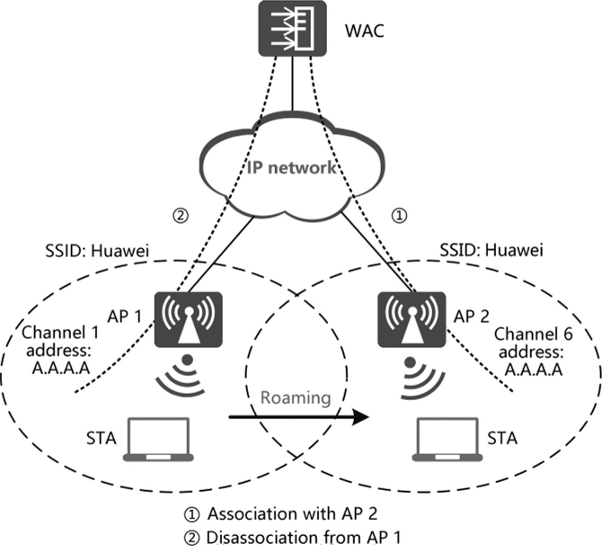
1. While maintaining connected to АР 1, an STA sends probe request frames on all supported channels. Then, after receiving the request on channel 6 (used by AP 2), AP 2 sends a response on channel 6. After receiving the response, the STA evaluates the signal quality of AP 1 and AP 2 and determines the optimal AP to be associated with. In the example provided, AP 2 is selected.
2. As illustrated in 1, the STA sends an association request to AP 2 on channel 6, and AP 2 sends the association response. Then, an association is established between the STA and AP 2.
3. As illustrated in 2, the STA sends a disassociation request to AP 1 on channel 1 (used by AP 1) to dissociate from AP 1.
If the STA security policy uses open authentication or wired equivalent privacy (WEP) shared key authentication, no further action is required. However, if Wi-Fi Protected Access (WPA) or Wi-Fi Protected Access 2 (WPA2) + pre-shared key (PSK) are used, another step of key negotiation is required. If WPA2 + 802.1X are used, a further step of 802.IX authentication and key negotiation is required.
Each time an STA accesses an AP, with WPA/WPA2 + PSK and WPA2+802.1X, key negotiation or authentication interaction is required. This leads to an extended time spent switching to a new AP and increases risks of service outages and voice and video frame freezing. The following describes how fast roaming and 802.11k assisted roaming are used to solve these challenges.
In addition to authentication, STA stickiness must be considered. Due to inconsistent roaming thresholds among STA vendors, some terminals respond slowly to roaming. As illustrated in Figure 3.14, when moving closer to an AP that provides a higher signal quality, STAs are still associated with the original AP, even when signal quality becomes extremely low. This is referred to as stickiness, while these terminals are referred to as sticky STAs.
Low signal quality causes service experience unable to be guaranteed for sticky STAs. It also decreases data transmission speed for these STAs, leading to more air interface resources consumed than normal. As a result, other STAs are adversely impacted. This section expands upon how smart roaming is used to solve this problem.
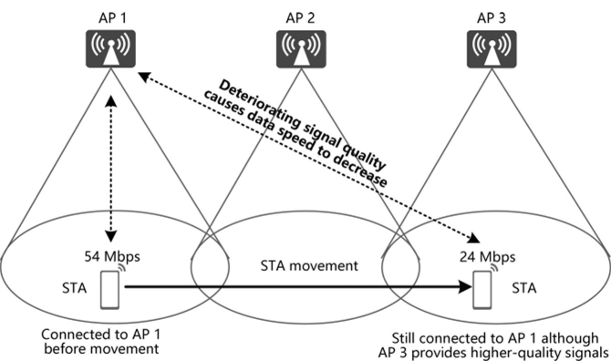
Fast Roaming Principles
Fast roaming simplifies the STA authentication exchange and/or key negotiation process of WPA2 + PSK and WPA2 + 802.1X, shortening the time to roam to a new AP. This section uses Extensible Authentication Protocol-Protected Extensible Authentication Protocol (EAP-PEAP) and Advanced Encryption Standard (AES) as an example to describe the principles of fast roaming
Based on common roaming to a new AP, the entire packet exchange process includes link authentication, reassociation, STA authentication, and key exchange, as illustrated in the below Figure. The last two actions use the majority of the entire exchange time.
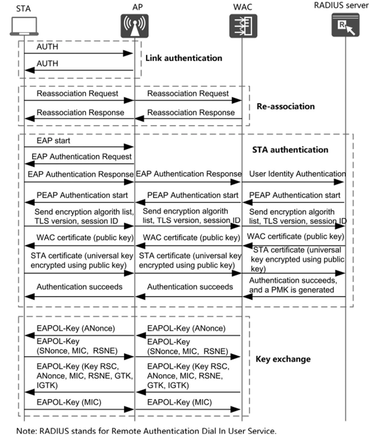
1. PMK fast roaming
To improve roaming experience, 802.lli introduces PMK caching to avoid 802.IX authentication. A roaming process with PMK caching is referred to as PMK fast roaming and is only applicable to WPA2 + 802.1X authentication.
In PMK fast roaming, STAs include a PMK Identifier (PMKID) in their association/re-association requests. STAs uniquely and irreversibly identify their PMKs through PMKIDs. Then, upon receiving an association/reassociation request, the AP or WAC derives a PMKID based on its own PMK. If the result is consistent with that in the request, the STA is considered having completed 802.IX authentication, and the AP or WAC directly sends the association/reassociation response. The key exchange process continues without another STA authentication process.
2. 802.11r fast roaming
802.11r, also known as Fast Basic Service Set Transition (FT), was adopted on July 15, 2008. Devices complying with this specification support fast and secure roaming. The roaming mode is referred to as 802.11r fast roaming and is applicable to both WPA2 + PSK and WPA2 + 802.1X authentication.
In 802.11r fast roaming, STA authentication and key exchange are completed during link authentication and association. By doing this, authentication and key exchange are not needed during roaming.
Both roaming technologies require support from both APs and STAs.
1. PMK fast roaming
As described above, PMKID is key to PMK fast roaming.
Upon common roaming or upon the first access to networks with WPA2+802.1X authentication enabled, PMKs are generated on both STAs and the WAC during STA authentication and are used to generate pairwise transient keys (PTKs) during key exchange. A PMK, with STA’s MAC address, basic service set identifier (BSSID), and PMK lifetime, forms a pairwise master key security association (PMKSA). A PMKID is generated based on the PMKSA by the formula:
PMKID = HMAC-SHAl-128(PMK,"PMKName"|BSSID|MAC_STA)
HMAC-SHA1-128 is a hash function. The PMKID calculated using this function is unique and irreversible. PMK Name is a fixed character string.
Based on this formula, PMKID remains unchanged as long as the PMK and MAC addresses are not changed. STAs include the PMKID in their association/reassociation requests. The AP, after receiving an association/re-association request, reports the PMKID to the WAC. Then, the WAC calculates a PMKID and compares the result with the received one. If the two are the same, the WAC considers that the STA has been authenticated and directly instructs the AP to send the STA the association success response. With PMKID successfully verified, key exchange will be directly proceeded without a second authentication.
2. 802.llr fast roaming
802.llr includes the FT protocol and FT resource request protocol, with the latter including an extra resource confirmation packet exchange process on top of the former. With FT resource request procedures, if the destination AP has no resources available for an STA, its roaming access will be denied. Each protocol supports two modes: over-the-air and over-the-DS. In over-the-air mode, packet exchanges are completed only between STAs and the destination AP. By contrast, in over-the-DS mode, the source AP also participates in packet exchanges.
A three-level key system is responsible for key negotiation during association, where the authenticator (AP and WAC) and authentication application ends have their own mechanisms
The following definitions apply in the three-level key system.
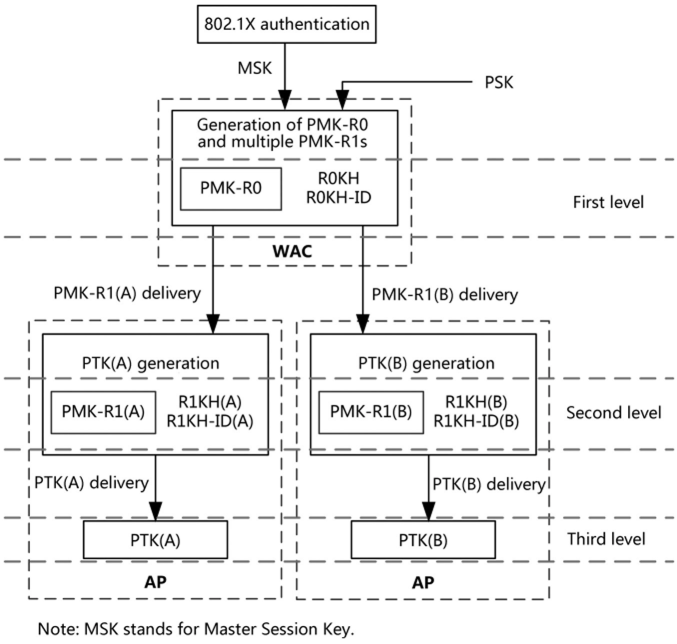
Key mechanism on the authenticator end
1. PMK-RO
As the first-level key generated based on PSK or 802.IX PMK, PMK-RO is identified by PMK-RO Name and saved in the PMK- RO Key Holder, which is referred to as ROKH and SOKH on the authenticator and authentication application ends, respectively. The ROKH-ID and SOKH-ID are used to identify the ROKH and SOKH, respectively.
2. PMK-R1
PMK-R1 is the second-level key generated based on PMK-RO. It is identified by PMK-R1 Name and saved in the PMK-R1 Key Holder, which is referred to as R1KH and SIKH on the authenticator and authentication application ends, respectively. The R1KH-ID and S1KH-ID are used to identify the R1KH and SIKH, respectively. Multiple PMK-Rls may exist, and the PMK-R1 generator distributes the PMK-R1 to each key holder. In practice, the WAC generates one PMK-RO as well as multiple PMK-Rls and sends the PMK-Rls to different APs. Each authentication application end includes one PMK- RO, one PMK-R1, and one PTK.
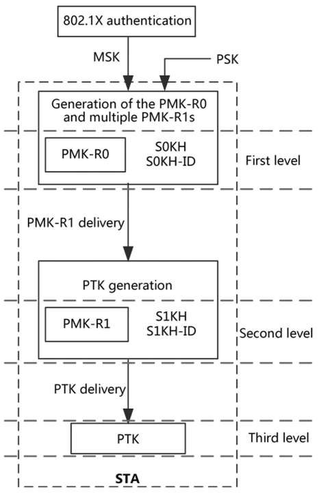
Key mechanism on the authentication application end.
3. PTK
PTK is the third-level key generated based on the PMK-R1. After PTKs are generated at both ends, encrypted communication can be implemented.
As illustrated in the example below, an STA roams from АР 1 to AP 2, while WPA2 + 802.1X authentication is used on the network side. The roaming diagram is illustrated in Figure 3.18.
STA initial access to an FT network
The WAC notifies STAs of its support for 802.1 lr by sending- Beacon and probe response frames and broadcasts its own mobility domain identifier (MDID). If an STA supports 802.llr, it replies to the Beacon and probe response frames and initiates the access process.
First, a common link authentication process is completed.
Then, the STA sends АР 1 an association request frame containing the MDID. Upon the receipt of the association request frame, AP 1 checks the MDID against its own and replies to the STA with an association response frame. Depending on the check result, if they are consistent, AP 1 sends the association request frame to the WAC, and the WAC replies with an association response frame containing the MDID, ROKH-ID, and R1KH-ID through АР 1. If they are not consistent, АР 1 sends the association response frame indicating that the association is rejected.
The ROKH-ID and R1KH-ID are the MAC address of the WAC and the BSSID of АР 1, respectively, and they are used for the STA to generate PMK-RO and PMK-R1.
Next, EAP-PEAP authentication is completed between the STA and RADIUS server, after which PMK is generated. The WAC generates PMK-RO and PMK-R1 that corresponds to АР 1, and sends PMK-R1 to АР 1. PMK-R1 is calculated as follows:
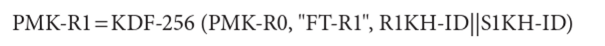
KDF-256 is the key calculation function, R1KH-ID is the BSSID, and S1KH-ID is the MAC address of the STA.
Lastly, four handshakes are completed between the STA and the WAC, after which the PTK is generated for data encryption. This process is illustrated in Figure 3.19.
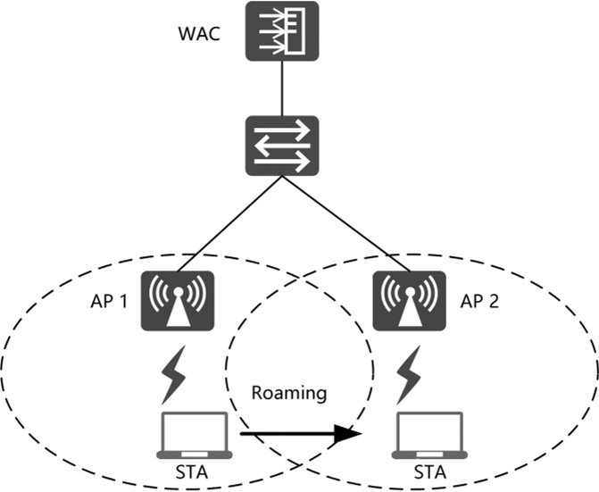
FIGURE 3.18 Fast roaming.
STA roaming
The following describes how an STA that has established connections to АР 1 in an FT network roams to AP 2.
First, the STA sends AP 2 an authentication request frame containing its MDID, PMK-RO Name, SNonce, and ROKH-ID.
Next, after receiving the authentication request frame, AP 2 checks whether the MDID is the same as its own MDID. If it is the same, AP 2 extracts the information from the frame and combines the extraction with its own ANonce, R1KH-ID, and STA MAC address before sending it to the WAC.
Then, after receiving the information, the WAC checks whether the PMK-RO Name is the same as its own. If it is, the WAC generates PMK-R1 and PTK based on the remaining information and sends PMK-R1 and the PTK to AP 2. After receiving the PMK-R1 and PTK from the WAC, AP 2 considers that the STA has passed authentication and sends the STA an authentication response frame containing R1KH-ID, ANonce, MDID, PMK-RO Name, SNonce, and ROKH-ID.
Lastly, after receiving the authentication response frame, the STA generates PMK-R1 and PTK based on the information contained. Then, the STA completes the authentication for fast roaming.
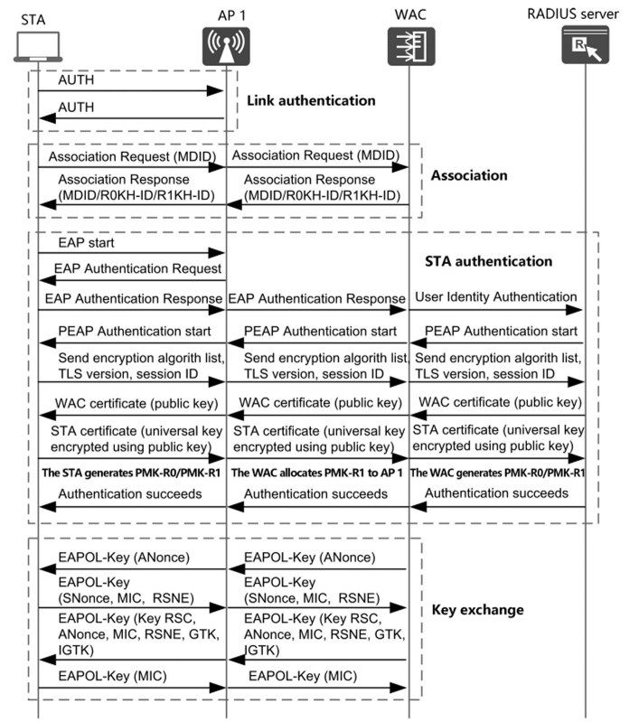
FIGURE 3.19 STA initial access to an FT network.
The STA reassociates with AP 2 through the following process:
First, the STA sends a reassociation request frame containing a message integrity check (MIC). Then, after receiving the request frame, AP 2 uses the generated PTK to verify the MIC, and, if correct, returns a reassociation response frame containing the MIC to the STA. After receiving the response frame, the STA uses the generated PTK to verify the MIC, and, if correct, considers that the reassociation exchange is completed and then disconnects from AP 1.
Then, fast roaming is completed, with the process illustrated in Figure 3.20.
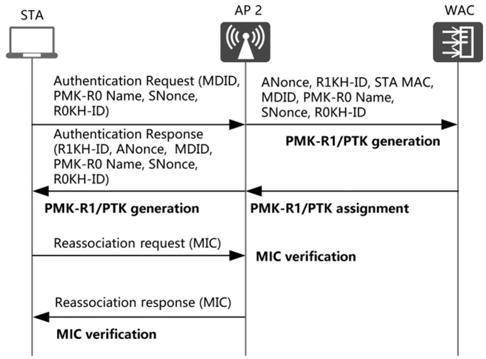
FIGURE 3.20 STA roaming.
Principles of 802.11k Assisted Roaming
802.11k defines the mechanism for measuring WLAN radio resources, enabling STAs and APs to sense radio environment. The following uses Huawei’s WLAN products to describe how 802.11k assists in STA roaming (802.11k will not be described in detail).
According to 802.1 lk, STAs send requests to APs for the list of neighbor APs within the extended service set (ESS). The list contains the BSSIDs and channel numbers, as illustrated in Figure 3.21.
As illustrated in Figure 3.22, after receiving the neighbor AP list containing the channel information of adjacent APs, STAs compliant with 802.11k do not need to search all 2.4 and 5 GHz channels to find roaming destinations. As a result, scanning time and channel scanning overhead are both reduced. A reduced scanning time ensures improved roaming experience, while reduced channel scanning times minimize unnecessary channel switching and probe requests, prolonging the battery life of STAs.
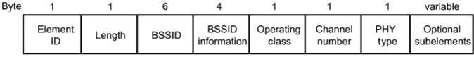
FIGURE 3.21 Information about neighbor APs.
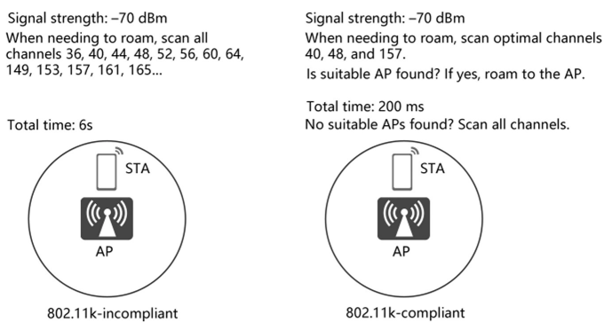
FIGURE 3.22 Principles of 802.11k assisted roaming.
As illustrated in Figure 3.23, STA-obtained neighbor AP lists are dynamically generated. Therefore, neighbor AP lists are different among STAs connecting to different APs.
Smart Roaming
Although sticky STAs only account for a minority of STAs, they pose enormous risks to networks.
Decreased throughput
STAs roam to APs for a higher-quality signal coverage that enables a higher data rate. However, STA stickiness restricts STA roaming, forcing STAs to exchange data at a low rate. As such, longer times are needed for them to occupy the air interface resources, preventing other STAs (particularly high-speed ones) from achieving a higher throughput, while also decreasing the throughput of the AP.
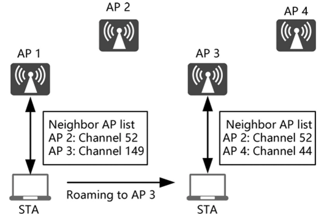
FIGURE 3.23 Obtaining different neighbor AP lists when accessing different APs.
Impacted user experience
Sticky STAs do not switch to other APs that provide higher signal quality. As a result, the coverage deteriorates, decreasing data rate and impacting user experience.
Disrupted channel planning
In networks with multiple APs, channel planning is performed to maximize network capacity by reducing interference through channel multiplexing. However, STA stickiness restricts channel planning because it leads to a channel outside of an area being used, possibly inviting interference with the outside channel. As a result, capacity decreases, affecting user experience.
Smart Roaming Principles
Smart roaming is used to identify and guide sticky STAs to more suitable APs, eliminating adverse impacts. The smart roaming process is as follows:
1. Step 1: Identifying sticky STAs
Based on network planning, each AP has a core coverage area, with coverage edges determined according to edge signal strength required by edge throughput. In the example illustrated in Figure 3.24, the edge signal strength is -65 dBm, and each service area is covered by at least one AP (coverage areas overlap when multiple APs provide coverage). However, if the signals received by an AP from an STA are weak when compared to the APs edge signal strength, the STA has entered the coverage area of another AP, and STA roaming will be triggered as a result. As such, STA stickiness can be determined based on the signal strength received on APs with which STAs are associated.
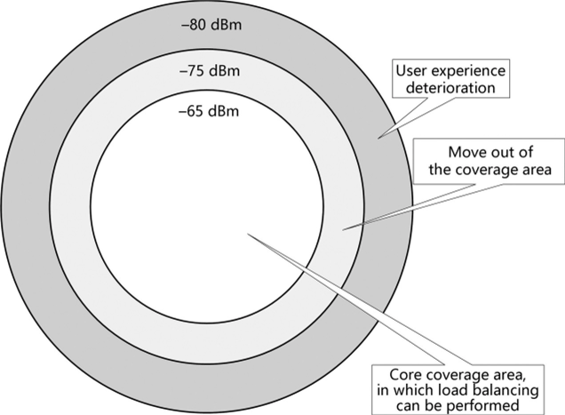
FIGURE 3.24 Coverage areas and signal strength.
2. Step 2: Collecting information about neighbor APs
To help an identified sticky STA select a more suitable AP, the network collects information about adjacent APs through measurement. 802.11k provides a mechanism for measuring adjacent APs and collecting related information. For STAs supporting 802.11k, measurement is completed using this mechanism. For STAs not supporting 802.11k, APs perform active scanning and listening to implement measurement.
For an identified sticky STA supporting 802.11k, upon detecting a stickiness behavior, the associated AP instructs the STA to perform neighbor measurement based on 802.11k, while the STA sends the AP the measured signal strength of adjacent APs based on the 802.11k notification mechanism, as illustrated in Figure 3.25.
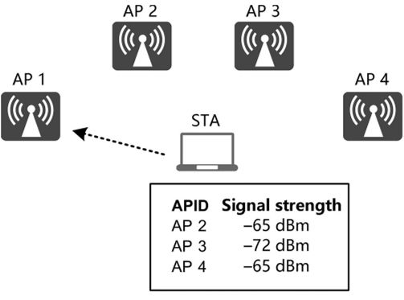
FIGURE 3.24 Coverage areas and signal strength.
For an identified sticky STA not supporting 802.11k, the network uses the data obtained by AP scanning. The data is generally a summary of the scanning results of all APs within a period of time. However, as AP scanning is completed at different times, the information will be, more often than not, misleading for quickly moving STAs, as illustrated in Figure 3.26.
To address the challenge of selecting the most appropriate destination AP for STA roaming, a collaboration mechanism between APs has been introduced to help APs notify each other of their load and signal strength, as illustrated in Figure 3.27. However, the coordination is based on AP channel switching and scanning. On the APs processing voice, video, or other delay-sensitive services, the scanning process is not performed to ensure service experience.
3. Step 3: Selecting an appropriate AP for sticky STAs
Based on 802.11k scanning (for supporting STAs) or the information collected through AP collaboration (for not-supporting STAs), the network generates a neighbor AP list for sticky STAs and selects a destination AP from the list for each of the STAs to roam to. The destination AP must meet the following requirements:
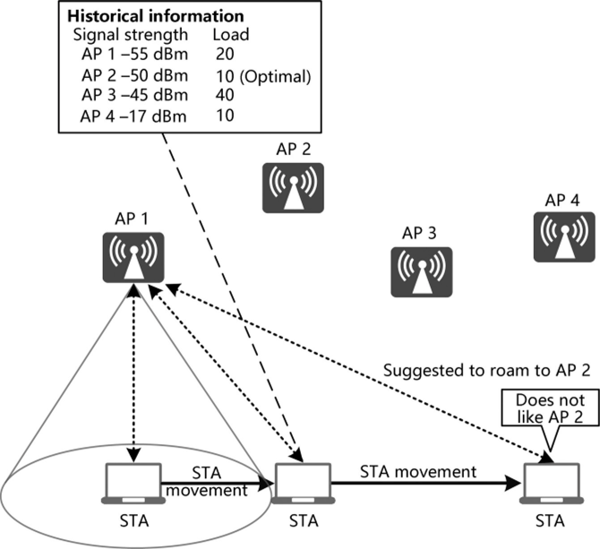
FIGURE 3.26 Information becoming misleading for quickly moving STAs.
The network selects the AP providing the strongest signal while meeting also the requirements as the destination AP.
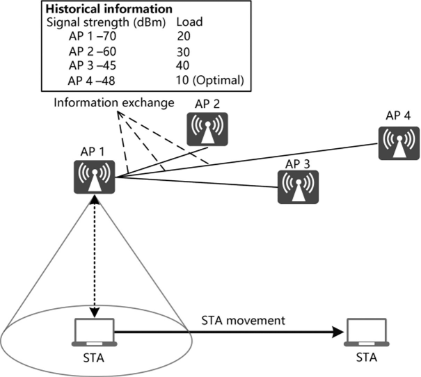
FIGURE 3.27 Selecting an appropriate destination AP through AP collaboration.
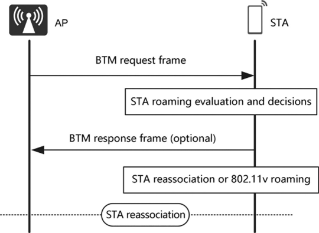
FIGURE 3.28 STA determining to roam to the recommended destination AP.
Band Steering
Currently, the spectrum resources designated for WLAN technology include:
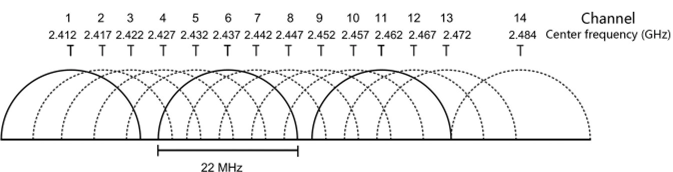
FIGURE 3.29 Spectrum resources on the 2.4GHz band.
UNII-1 80 MHz, UNII-2 80 MHz, UNII-2 Extended 220 MHz, UNII-3 80 MHz, and ISM 20 MHz, as illustrated in Figure 3.30. This band provides much more spectrum than 2.4 GHz, while there are also considerable differences among countries. For example, China does not open up the UNII-2 Extended part, whereas South Korea only opens up the UNII-3 part.
In addition to the substantial difference in the amount of spectrum resources, the 2.4 and 5 GHz bands differ greatly in terms of interference and standard support.
1. As the 5GHz band has abundant spectrum, 802.11ac supports the aggregation of multiple 20 MHz channels into 80 MHz or even 160 MHz channels. Higher-bandwidth channels accommodate a larger amount of data traffic than low-bandwidth channels. For STAs, a higher data transfer rate results in shorter file and video download time.
2. The 2.4 GHz band is the first spectrum designated for Wi-Fi networks and has few differences among countries. Many common devices, such as Bluetooth, microwave ovens, and monitoring and remote control devices, all operate on this band. Therefore, this band has limited resources but is mostly used, increasing congestion.
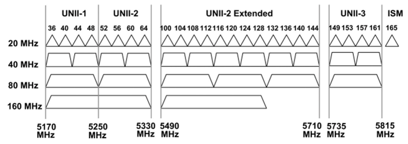
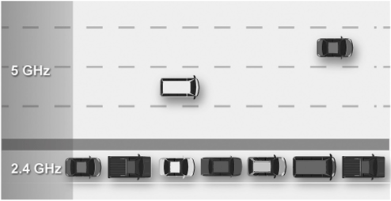
FIGURE 3.31 Difference between the 2.4 and 5 GHz bands.
Figure 3.31 illustrates the difference between the 2.4 and 5 GHz bands using an analog. The 2.4 GHz band is like a narrow county road, filled with various obstacles that slow down vehicle movement. By contrast, the 5 GHz band is like a wide, open highway on which high speeds are possible. For dual-band STAs (supporting both the 2.4 and 5 GHz bands), the 5 GHz band is certainly the optimal choice for Wi-Fi services in most cases.
Currently, not all dual-band STAs select the optimal 5 GHz band. Out- of-date devices select networks only based on signal strength, and they do not actively camp on the 5 GHz band. Despite the 5 GHz preference function being implemented on smartphones by some terminal vendors, their devices still access the 2.4 GHz band in some cases.
Band Steering Principles
Band steering involves dual-band STA identification and follow-up 5 GHz band steering.
1. Dual-band STA identification
To discover networks, STAs send probe request frames to APs and receive probe response frames from the APs. Dual-band STAs send probe request frames on all channels in 2.4 and 5 GHz bands. As illustrated in Figure 3.32, if an AP receives probe request frames in both 2.4 and 5 GHz bands, the STA is a dual-band terminal.
2. 5 GHz band steering
Band steering is performed both in and after the association phase.
1. In-association steering: As mentioned above, STAs discover networks by sending probe request frames, which is referred to as active scanning. As illustrated in Figure 3.33, APs temporarily do not send STAs probe response frames in the 2.4 GHz band, steering STAs to the 5 GHz band.
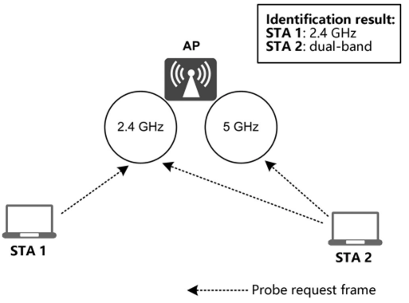
FIGURE 3.32 Identifying dual-band STAs.
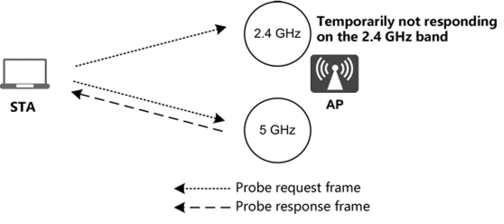
Figure 3.34 illustrates an AP sending a BTM Request to notify an STA of roaming based on 802. llv.
2. After-association steering: In addition to active scanning, STAs use a passive method that involves listening to Beacon frames sent by APs to discover networks. For STAs that still access the 2.4 GHz band when no probe response frames are received during active scanning, the APs steer them to the 5 GHz band based on 802.1 lv.
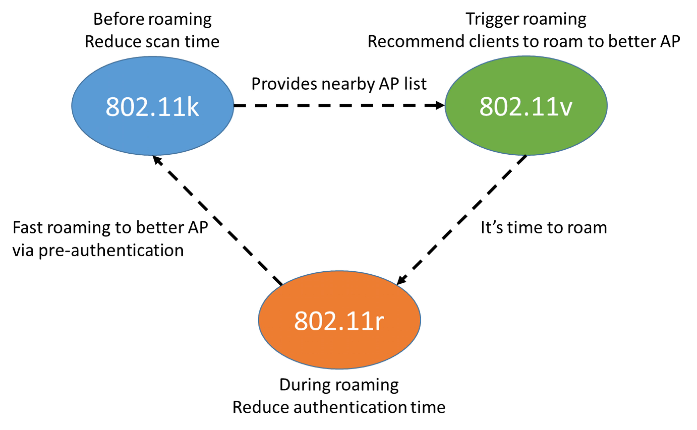
802.11v - BSS Transition Management
Wireless Network Management (WNM) allows STAs to exchange information, in order to improve the overall performance of the wireless network. STAs use WNM protocol to exchange operational data, which has network conditions of them.
BSS transition management has three messages, include BTM query, BTM request, BTM response.
BTM query message is transmitted by a STA requesting or providing information on BSS transition candidate AP.
BTM request message is transmitted by an AP in response to a BTM query frame.
BTM response message is transmitted by a STA in response to a BTM request frame. In this message, there is status code of STA.
| Status code | Meaning |
|---|---|
| 0 | Accept |
| 1 | Reject - Unspecified reject reason |
| 2 | Reject - Insufficient Beacon or Probe Response frames received from all candidates |
| 3 | Reject - Insufficient available capacity from all candidates |
| 4 | Reject - BSS Termination undesired |
| 5 | Reject - BSS Termination delay requested |
| 6 | Reject - STA BSS Transition Candidate List provided |
| 7 | Reject - No suitable BSS transition candidates |
| 8 | Reject - Leaving ESS |
| 9-255 | Reserved |